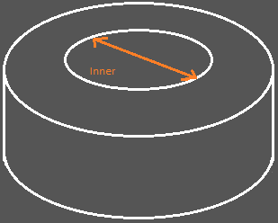

Transformer Designer Page 2
Applicable to Toroidal Transformers Only
Design Specifications
Toroid's core height (
)
Toroid's core thickness (
)
Number of turns - Primary
Number of turns - Secondary
Core inner diameter (
)

Window factor (%)
The window factor is the percentage to be deducted in the window area dedicated to bobbin thickness, layer insulation thickness, and your effectiveness in layering out the wires around the bobbin. The value is somewhere from 20% to 50%.
Calculate Wire Size
Calculation Result
Wire size - Primary AWG
Wire size - Secondary AWG
Wire ampacity - Primary
Wire ampacity - Secondary
Wire weight - Primary (kgs)
Wire weight - Secondary (kgs)
Copyright © 2022 by J.A.Agutaya
All right reserved.